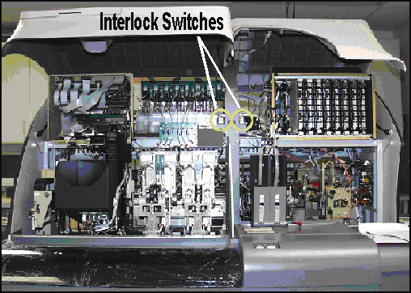
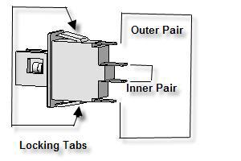
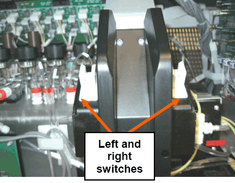
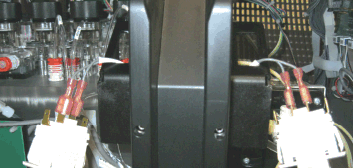
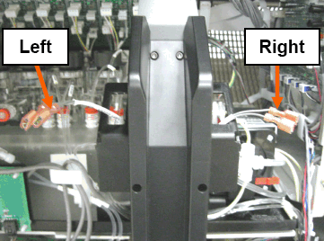

Replacing Interlock Switch
This procedure describes how to replace an interlock switch.
Required Materials:
Specialty tools are required for this procedure:
- Multimeter with clip leads
Perform this procedure when:
- Installing a new interlock switch.
- Replacing a damaged or defective interlock switch.
Note: When replacing a damaged or defective interlock switch, update the striker, if it has not been updated. Refer to the
Instrument: Replacing and Aligning Interrupt Switch Striker procedure.





- Open the upper left and upper right front covers.
- Remove power from the motors by turning off the switch on the Power Distribution PCB labeled "All DC power (except CPU and reagent coolers)".
-
Remove the interlock switch.
- Locate the damaged or defective interlock switch.
- Press the locking tabs and remove the interlock switch out from the bottom of the interlock switch bracket.
- Remove the two connection wires on the inner pin pair or outer pin pair of the switch.
- Remove the interlock switch.
-
Replace and install the interlock switch.
-
Test the interlock switch with upper covers.
- Restore power to the motors by turning on the switch on the Power Distribution PCB labeled "All DC power (except CPU and reagent coolers)".
- Close the upper left and upper right front covers.
- Initialize the system.